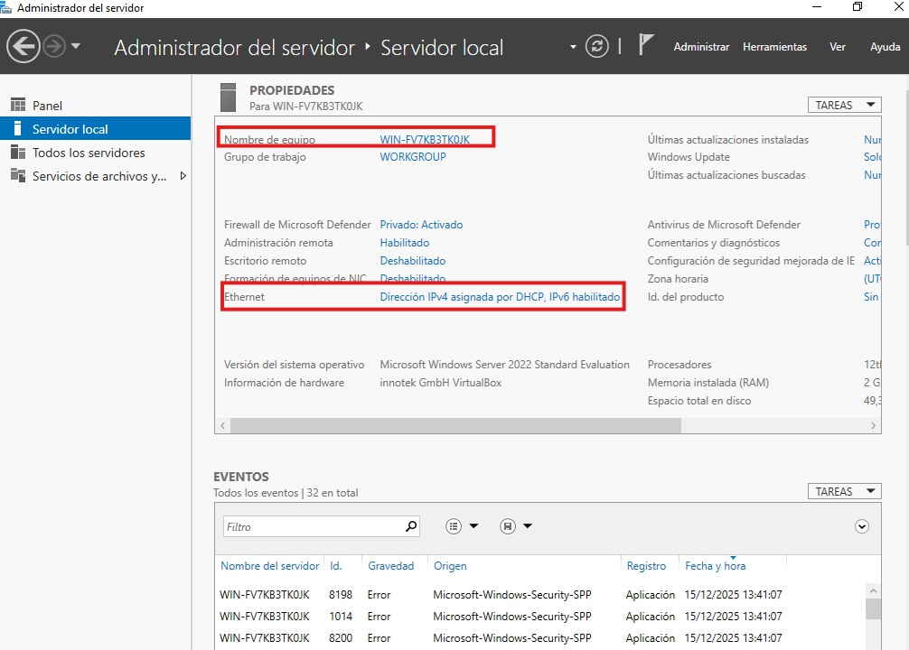

Configuración de windows server 22
Configuración
Para empezar voy a configurar el servidor para que se conecte con una ip estática (192.168.32.20) a la red NAT que configuramos anteriormente. También le voy a cambiar el nombre (DC20).

Hacemos doble click en nombre de equipo y cambiar le pongo el que yo
quiero (DC20) aplico y acepto. Te manda reiniciar para que los
cambios surtan efecto.
Una vez hemos cambiado el nombre del equipo hacemos doble click en
dirección de ip asignada por DHCP, botón derecho en Ethernet,
propiedades, doble click en Protocolo de internet versión
4(TCP/IPv4).